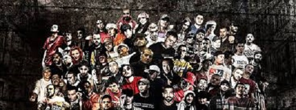

Türkçe Rap
Türkçe sözlü rap müzik ya da Türkçe rap, 1990'lı yılların ortasında ana akım medyada görünürlük kazanmış bir müzik türüdür. Amerika'dan Almanya'ya gelen rap ve hip hop kültürünü benimseyen göçmen Türklerden oluşan Cartel grubu Türkçe rapi ilk tanıtan oluşum kabul edilir.
Türkçe Rap'in Gelişimi
Türkçe Rapin tarihçesi 3 nesil altında incelenebilir.
Birinci Dalga
Türkler arasında rap, ilk olarak Almanya'da yaşayan Türkler arasında yayılmaya başlamıştır. Almanya'daki ABD askerlerinin çocukları tarafından gurbetçi Türk ailelerin çocuklarına tanıtılan rap müzik Türk gençler tarafından kısa sürede benimsenmiştir. Almanya'daki Türkler, 90'lı yılların başından itibaren yöneldikleri rap müziğin Türkiye'ye taşınmasında öncü olmuşlardır. 1986 yılında kurulup 2000 yılında sona eren İslamic Force adlı Türk kökenli rap müzik grubu müziklerini İngilizce yapmıştır ve bu yüzden Türkçe rap içerisine dahil edilmemiştir. 1990-1995 yılları arasında genellikle Almanca ve İngilizce icra edilse de 1991 yılında King Size Terror adlı oluşumda bulunan Alper Ağa'nın "Bir Yabancının Hayatı" parçasıyla Türkçe sözlü rap müzik dönemi kısmen başladı. Türkiye'de Bülent Ortaçgil ve MFÖ şarkılarında rap tarzına ilk yer verenler arasındadır. Grup Vitamin'in bazı yabancı rap şarkılarına Türkçe söz yazarak seslendirdiği de bilinmektedir. Türkçe rap, 1995 yılında Cartel ile Türkiye'de bilinirlik kazandı. 1995 yılında Cartel'den sonra 1996 yılında Türkiye'de kurulan ilk rap oluşumu Bursa'dan Barikat grubu oldu. 2002 yılında Barikat grubuna Türkçe Rap Müzik Ödülleri verildi. 1996 yılında Sirhot (Serhat Galatalı) Amerika'da kurduğu Narcotic grubuyla (G-Hun, I-Touch, Sirhot) Beyaz Karanlık albümü'nün "Her Yeni Gün" şarkısına klip çekmişlerdir. Ama albüm 2002 yılında çıkmıştır. Hatta klipte saldırıdan önceki İkiz Kulelerin görüntüleri o tarihler de çok konuşulmuştur. 1997-98 yılları arasında Sagopa Kajmer (Yunus Özyavuz), Ceza (Bilgin Özçalkan) ve Dr. Fuchs (Tarık Gamert) gibi isimlerle Kuvvetmira oluşumu, 1997 yılında İstanbul'dan genellikle graffiti ile uğraşan Turbo (Tunç Dindaş), 1997 yılında İzmir'den Yener Çevik ve Berlin'den Fuat Ergin, 1999 yılında Cash Flow ve NormLife grubunun kurucuları olan Erman-Ender, Ankara'dan Mode XL grubunu kuran Evren Besta-Yasin Vural (VeYasin) ve Edirne'den AdrianaPolis'in kurucusu Rapozof gibi Türkçe rap sanatçıları ortaya çıkmaya başlamıştır. 19 Kasım 2000 tarihinde 1. Jenerasyon'un öncüsü İslamic Force'un kurucularından Bülent İpek (Boe B) hayatını kaybetti.
İkinci Dalga
Türkçe Rap'in Cartel'den sonra medya tarafından tanıtıldığı ve yayınlandığı ilk tarihler 2000-2005'li yıllardır. Özellikle Dream TV, Türkçe rap'e çok büyük bir destek vermiştir. Öyle ki Sagopa Kajmer, Ceza ve Dr. Fuchs gibi isimlere 2003 yılbaşı programında yer vermiştir. Daha önceki yıllarda yeraltında olan birçok isim bu dönemde yavaş yavaş profesyonellik kazanmıştır. Sansar Salvo (Ekincan Arslan), Pit10 (Server Uraz) ve Canka bu isimlerden sadece üç tanesidir. 1998 yılında çıkış yapan Ayben ve Kolera'dan sonra başka kadın rap müzisyenleri de ortaya çıkmıştır. Örneğin 2002 yılında İzmir Karşıyaka'da Kübra Demirkol ve Pınar Demirkol tarafından Rapangels grubu kurulmuştur. Bu döneme damga vuran olaylardan biri Ceza ve Sagopa Kajmer arasındaki dissleşmedir.
Sagopa Kajmer-Ceza Dissleşmeleri (2005-2010)
1 Temmuz 2004 tarihinde Ceza'nın Rapstar albümünde bulunan Sinekler ve Beatler parçasında Ayben'in, Kolera'ya göndermelerinden dolayı ve açıklanmayan özel nedenlerden dolayı Sagopa Kajmer ve Ceza arasında soğuk rüzgarlar esmeye başladı. Ceza'nın kız kardeşi Ayben'in Sagopa Kajmer'e laf atması ve Kolera'nın Ceza'nın oynadığı lolipop reklamını eleştirmesini takiben, Ceza Sagopa Kajmer ve Kolera'ya Mürekkep Doldurdum adlı küfürlü bir diss attı. Ardından Sagopa Kajmer, Kuvvetmira ekibiyle birlikte 5 Aralık 2005'te Disstortion EP adlı 5 parçalık az küfürlü bir diss albümü hazırladı. Bu albümde Ceza başta olmak üzere Ayben, Rokabeat ve Sahtiyan'a açıkça göndermeler bulunmaktadır. Buna karşılık Nisan 2006'da Ceza'nın eşi Rokabeat ve Ceza'nın kız kardeşi Ayben, Kolera'ya ve Sagopa Kajmer'e Günlerin Ağlak adlı bir diss attı. Sahtiyan ise Şubat 2006'da Kartlar Karışsın adlı diss şarkısını yayınladı. Buna cevaben Sagopa Kajmer, Kolera ile birlikte Pesimist EP 4 albümünde Trakonya, Cümle Mühendisi ve Dil Yaratmakta En Asil Silahları adlı diss şarkılarını yayınladılar. Daha sonra Sagopa Kajmer, 2007 yılında Ceza ve Ayben'e şahsına ve eşi Kolera'ya hakaret ettikleri, aynı yıl bir konserde Ceza, Salako Kajmer diyerek lakabıyla dalga geçtiği için dava açtı. Aynı yıl içinde Fuat Ergin, Sagopa Kajmer'e kızarak Kırmızı Halı adlı bir diss attı. Buna karşılık Sagopa Kajmer, Fuat Ergin'e de dava açtı. Bu olaylardan sonra sanatçıların parçalarının içinde, katıldıkları showlarda ve konserlerde bir sürü göndermeler yapıldı. 2009'da Hiphoplife'ın toplu albüm projesi adı altında Sagopa Kajmer'e 37 parçalık Hiphoplife Mixtapes Vol.1 - Nafile adlı diss albümü yapıldı. 2009 yılında Beyaz Show programına katılan Sagopa Kajmer'in Rapstar yarışması ve kendisi hakkında ağır konuştuğu için kızan Ceza , Bandırma konserinde Sagopa Kajmer'e gönderme yapmıştır. Bu çatışmalar 2010'ların başında son bulmuştur.Turkish Hip Hop Belgeseli
Yönetmenliğini Cengiz Özkarabekir'in üstlendiği, 9 Kasım 2007 ve 18 Kasım 2007 tarihlerinde CNN Türk kanalında yayınlanmış iki bölümlük Türkçe rap ve Türkçe hip-hop hakkındaki ilk geniş kapsamlı belgeseldir.
• 1. Bölüm: Türkçe Rap'in Doğuşu: Almanya (9 Kasım 2007)
• 2. Bölüm: Yeraltı Operasyonu'ndan Yerüstüne: Türkiye (18 Kasım 2007)
Belgeselde konuşan isimler:
• Almanya'dan Killa Hakan, Musa, Cartel'in üyeleri ve diğer rapçiler
• Türkiye'den Turbo, Ceza, Sagopa Kajmer, Fuat Ergin, Dr. Fuchs, Sahtiyan, Emre Baransel, Sultana, Ayben, Kolera ve Kadıköy Acil
Üçüncü Dalga
Birer nesil hareketi olarak gelişen Türkçe rap hareketlerinden üçüncüsü, Ezhel, Şanışer, Ben Fero gibi isimlerin yakaladığı başarıyla kendini gösterdi. Bu neslin şarkılarında dünyaya açıklık, sosyal gerçeklik ve siyasi tepki kendini gösterdi. Norm Ender'in Ezhel ve Ben Fero'yu eleştirdiği Mekanın Sahibi parçası ve buna Ezhel'in Lolo ile cevap vermesi bu dönemin ilk ses getiren dissleşmesi oldu.